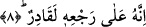

dört kemikten oluşur. Veya terâib iki el, iki ayak, iki göz demektir. Ya da terâib
gerdanlığın üzerinde durduğu göğüs kemikleri demektir.
İşte bundan dolayı baba çocuğun geçim işlerini yüklenir. Ananın çocuk sevgisi de bu
yüzden fazla olur.
Âyette arasında anlamına gelen “beyne” kelimesinin söylenmesi, meninin bedenin her
tarafından süzülüp meydana gelmesine işâret etmektedir. Bundan dolayı çocuk
genellikle anne ve babaya benzer. Çünkü erkeğin menisi sırtında birikir ve oradan
hareket eder. Kadının menisi ise göğüs kafesleri arasında toplanarak buradan yola çıkar.
Kutu’l-Kulub isimli eserde ifâde edildiğine göre meninin aslı ve özü kan’dır. Bu kan
insanın sırtında bulunan omurga kemiği içerisine yükselir ve mesken olarak burayı tutar.
Daha sonra vücut ısısı ve harâret bu kanı âdetâ pişirir. Böylece o özel meskeninde
bulunan ve pişen kan beyaza dönüşür ve bulunduğu yer olan sırt omurgası dolduğu
zaman oradan akma kanalına geçmek ister. Bu çıkış yolu ise erkek ve kadın tenasül
organına bitişik olan iki damardır. İşte meni bu iki damardan cinsel organa iner.
Esiletu’l-Hikem isimli eserde ifâde olunduğuna göre idrar yolu ile meni yolu arasında
gözle görülemiyecek derecede ince bir zar vardır. Bu iki yolun böyle bir zarla ayrılması
meninin idrarla karışıp da ana cevherinin harâreti bozulmasın diyedir.
et-Te’vilâtü’n-Necmiyye’de bu konuyla ilgili olarak şöyle deniyor: İnsan Peygamber
(s.a.) Efendimiz’in işâret buyurmuş olduğu Rahmânî nefsin rutubet suyundan
yaratılmıştır. Peygamber Efendimiz’in işâret buyurmuş olduğu söz şudur: “Ben
Rahman’ın nefesini Yemen tarafından hissediyorum.” [68] Bu nefes şu suyu kendisine
az sonra işâret edilen fışkıran muhabbet fem’inden (ağzından) fışkırmaktadır. İşaret
edilen muhabbet ise şudur: “Ben gizli bir hazine idim. Sonra bilinmek istedim ve dış
dünyadaki yaratıkları sırt ile göğüs kafesi arasından yarattım.” [69] Yani ben bütün
mahlukatı fâil ve ilahi olan el-yedd el-yumnâ isimli kuvvet erkeğinden yarattım. Nitekim
bu ilahi ve faal kuvvet şu sözde kendisini bulmaktadır: “Sonra o sağ elini sırtın sağ
tarafına sürdü. Oradan bembeyaz gümüş gibi bembeyaz bir zürriyet çıkardı.”
Yukarda okuduğumuz âyette geçen “terâib”ten maksad ise; el-yedd el-yusrâ adındaki
kabiliyyet kadınının göğüs kafesi demektir. Nitekim bu kabiliyyet kadının da şöyle işâret
olunuyor: Sonra o sol elini sırtın sol tarafına sürdü. Oradan simsiyah zürriyetler
çıkardı. İşte bu Rabbının sûretinde yaratılmış olan insanoğludur. Onu yaratan yaratıcısı
kendisini feyiz ve kabul suyundan yaratmıştır. Bu su, fâiliyyet ve kabiliyyet eliyle
mayalanmıştır. Nitekim buna; “Ben Adem’in çamurunu kırk sabah kendi elimle
mayaladım” [70] sözü işâret etmektedir.